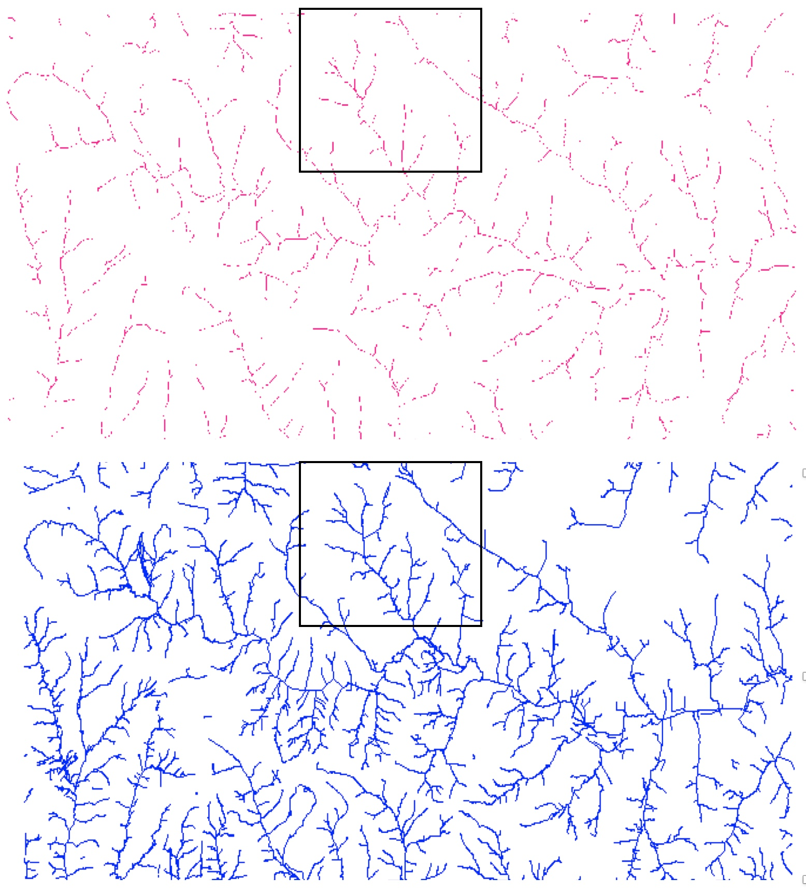
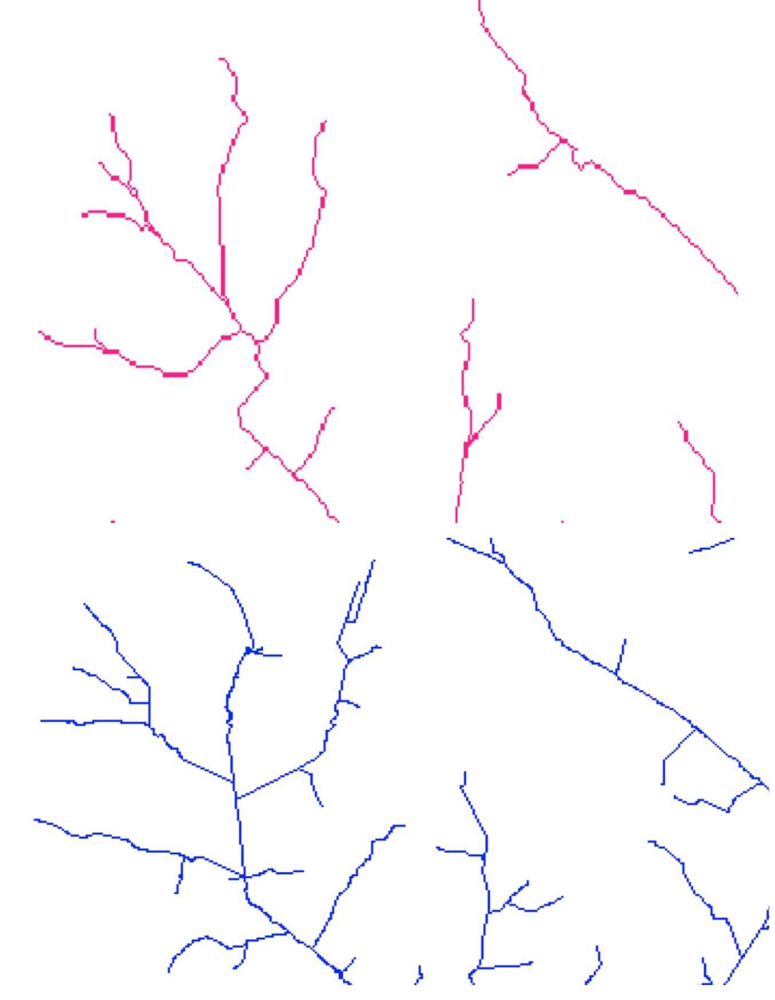
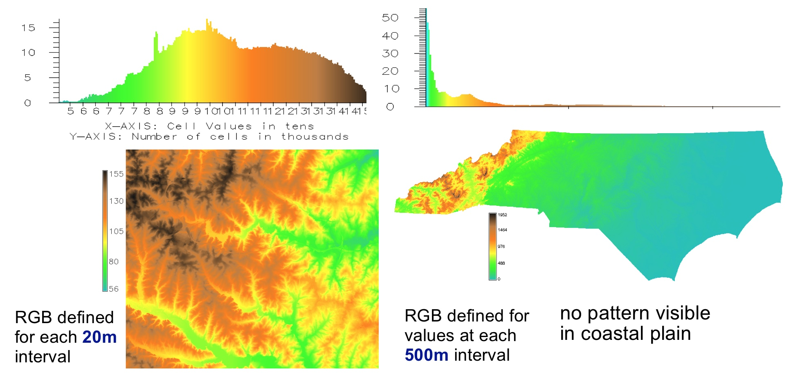
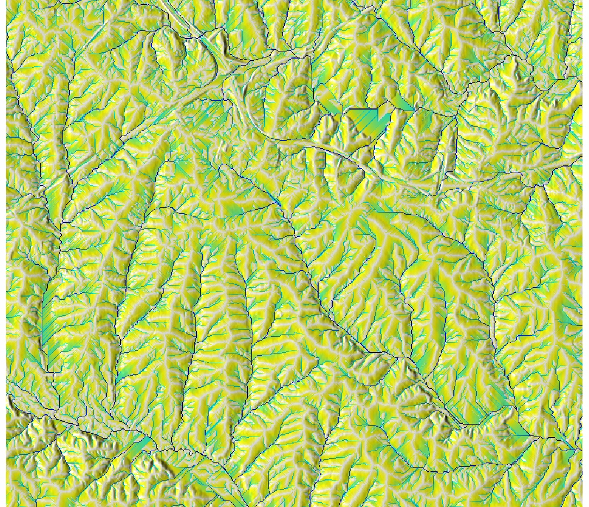

Geovisualization
Helena Mitasova
GIS/MEA582 Geospatial Modeling and Analysis NCSU
Outline (learning objectives)
- display of raster and vector data: scaling properties
- color ramps for raster data, relief shading
- color and symbols for vector data
- map elements
- 3D visualization: single and multiple surfaces
- dynamic visualization with animations
- Web GIS cartography: MapStory, CartoDB, WorldMap
- tangible interaction
Role of geovisualization
- Visual analytics
- Communication of geospatial information
- Example: Explore Global Weather Conditions at earth by Cameron Beccario
Display of raster and vector data
- all data displayed on computer screen are rasters
- raster data display: as we zoom in, pixels show up, we can reinterpolate to avoid visible pixels
- vector data display: scalable, preserves shape

Display of large rasters
If the number of rows or columns in a raster is greater than those of map display, not all pixels are visible 

raster lines representation is broken: convert to vector representation
Working with color
- Color definition components: hue, lightness, and saturation
- Quantitative representation: % Red, Green, Blue
- Color for raster data: discrete or continuous
- Continuous interpolates RGB values based on the values in the raster map
- Color for vector data: usually discrete by definition
Learn more about color
Colors for discrete raster data
- Quantitative data: constant hue, color intensity is a function of values
- Qualitative data: constant intensity, varied discrete hue


Soil erodibility and Soil ID maps
Brewer - example of discrete color ramps for cartography
Colors for continuous raster data
- continuous color highlights continuous property
- discrete color limits the information but makes the interval values easier to identify

(note: default color ramp for FP maps is often greyscale with uniform interval)
Colors for continuous raster data
Distribution of color based on uniform raster data intervals

Uniform intervals work for elevations in Piedmont, but for entire NC this approach highlights that most NC is flat coastal plane but we don't see its subtle topography structure
Histogram equalized color
Distribution of color based on histogram of raster data values and a custom color ramp

highlights topography structure but distorts the elevation differences
add equation or graph?
Color for non-linear distributions
- Flow accumulation data range over several magnitudes
- Uniform interval color ramp

The flow accumulation values range between 1 and 73000
Color for non-linear distributions
- Flow accumulation data range over several magnitudes
- Histogram equalized color ramp

The flow accumulation values range between 1 and 73000
Color for non-linear distributions
- Flow accumulation data range over several magnitudes
- Logarithmic color ramp

The flow accumulation values range between 1 and 73000
Maps with relief shading
- Color composite highlights relationship between
- the theme values represented by hue and
- surface structure represented by intensity (lightness)
- derived as shaded relief (illuminated topography in greyscale)
- hue: theme values (e.g., elevation, flow, land cover)

Add equations for illuminated relief and img composite
Relief shading
Resulting color composite for elevation theme

Relief shading
Color composite for flow accumulation with elevation

Cost surface shading
Color composite for proximity to roads surface

Surface can be abstract, such as cost surface, in this case proximity to the main highways based on street networks
Vector data display
Topic covered by thematic cartography, often follow established conventions or national standards
- lines: color and symbols
- polygons: color and fill, transparency
- points: color and symbols
- colors and symbols are assigned based on attributes
- general rules for quantitative and qualitative data apply
- relation between symbol size, line width and scale
- adding labels: complex algorithms for automated positioning of labels (simulated annealing)
From image to map
- Display of raster and vector data does not make a map
- Map: cartographic representation of geospatial data
- Map elements position the image on earth and explain the content
Coordinate system grid
- Compare the geodetic(geographic) and projected grid


Map elements
- data frame - map content image
- elements outside the map image
- legend and title
- scale and north arrow
- coordinates, citation, metadata

Image from report by Pare, GIS582
Visualization in 3D perspective
Viewing and analyzing 3D data
- Projection of 3D object into a 2D space: perspective
- Parameters:
- viewing position (height, distance and angle)
- surface position, z-scale, resolution
- light and shading
- surface color: raster map, vector data

Properties of 3D perspective
Different properties than 2D display
- paralel lines intersect in vanishing point(s)
- scale depends on distance from the viewer
- 3D ortho view: viewing position is in infinity above the image center
- only visible part of surface is rendered
- interactive exploration is important for viewing obstructed data
Light and shading
Important for visual representation of surface structure
Useful for identification of subtle features or artifacts

Multiple surface visualization
Applications - use cases
- Lidar: bare ground and surface with vegetation
- Change in topography (coast, development)
- Geological or soil layers
- Vertical scaling is important: vertical distances often 1-3 magnitudes smaller than horizontal
- Display: side-by-side or stacked
- Interactive cutting planes for exploration of stacked surfaces
Multiple surface visualization
Side by side: Bare Earth and Vegetated Surfaces derived from lidar data

Multiple surface visualization
Stacked with crossections: Groundwater, Bare Earth and Vegetated Surfaces

Multiple surface visualization
Difference over time: migrating dune

Dynamic Visualization
Dynamic LandscapesTalk on "Exploring changing landscapes with dynamic visualizations and tangible interaction"